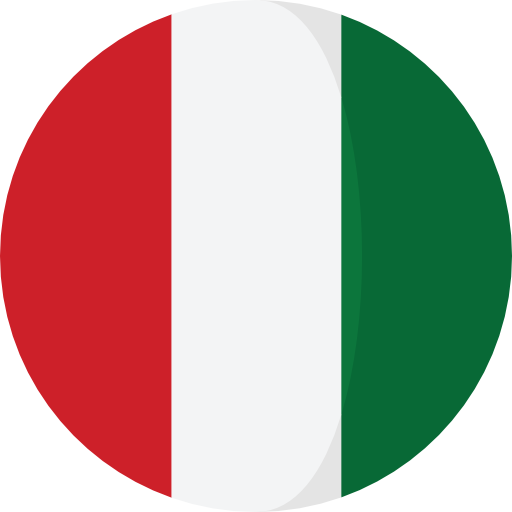
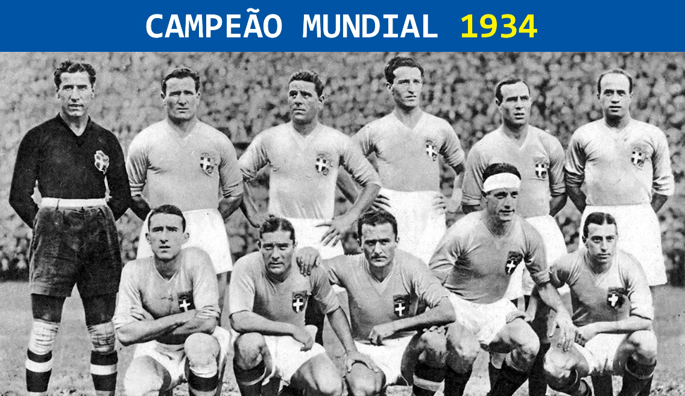

Sobre o Projeto:
A ideia do projeto é que cada sala do E.M. da unidade escolar SESI 416, realize um site relacionado com uma década da copa do mundo, por exemplo, a nossa sala(2ºA), ficou responsável com as copas da década de 30, ou seja, 1930, 1934 e 1938.
Campeões:
-
Uruguai

Fonte:
https://edicaodoscampeoes.blogspot.com/2018/11/uruguai-campeao-da-copa-do-mundo-1930.html -
Itália 
Fonte:
https://donosdacopa.files.wordpress.com/2010/03/500px-italian_football_team_1934.jpg -
Itália
Fonte:
https://calciopedia.com.br/wp-content/uploads/2013/04/italys-national-soccer-team.jpg